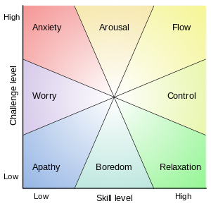

Ninja
Game Development & Research

Awards
Duration
Six months during Fall 2013
My Role
Lead Developer
Lead Game Designer
Lead Researcher
Art Assets
Deliverables
Game (JAR file)The Challenge
For an honors research project, I challenged myself to create a video game. I wanted to explore flow and dynamic difficulty adjustment in video games. I had to create an experiment that would make use of this game.
The Solution
Ninja is an action platform game for the computer. The player can traverse over 20 levels with various obstacles and enemies. I applied a dynamic difficulty system to the game. The game became easier or more difficult depending on how the player is performing.
This game was used in conjunction with an experiment I created. I had participants come to the lab and play the game for 20 minutes. Afterwards, they answered a flow questionnaire. This questionnaire allowed me to test my two conditions: dynamically changing the player's movement speed or the enemies movement speed.

Exploring Existing Research
I started by exploring existing research on video games and topics of interest to me. I was particularly interested in flow, fiero, dynamic difficulty adjustment, learning, and game design. I conducted literature reviews on these topics to understand where future research can go. The two interesting papers I based my research off was Jenova Chen's research and Davin Pavalas' disseration on flow. This led me to uncovering the link between flow and dynamic difficulty adjustment. I was able to find measurement scales for flow, so I chose one from an existing research paper.
Experimental Design
After deciding this was the route I wanted to take, I needed to create a hypothesis. My hypothesis was "by dynamically changing the difficulty on the environment in video games without player choice, the state of flow will be higher than when dynamically changing the difficulty on the player." This meant I was testing how DDA induced flow if I only altered the player's mechanics or altered only the enemies' mechanics. Having this figured out then helped me develop the rest of the experiment. The experiment consisted of an introduction, twenty mintues of gameplay, and a flow questionnaire for the players to answer.
I had two control versions: Alpha and Beta. Alpha was for change in player's movement speed and Beta was for change in enemy's movement speed.

Game Development & Design

I used Java with the basics Graphics2D library. I wanted to create a game that would be easy to pick up and play. I decided to create an action platformer because most video game players have played this type of genre. I have created a previous game, but nothing of this nature. So I spent three months of the semester developing the game by watching multiple game development tutorials. In the end, I developed a game based off a pre-existing game engine. I learned a lot about programming game mechanics, AI, graphics, controls, user interfaces, and the game loop. For the design, I created 99% of the art assets and was able to get a hang of producing assets such as backgrounds, user interfaces, sprite sheets, tile sets. It was fun using a tile map editor to create each of my levels.
Dynamic Difficulty Adjustment Algorithm
I researched how to appropriately apply dynamic difficulty adjustment (DDA) to a video game. I looked at previous attempts in commercial games, such as Half-Life 2, Max Payne, Mario Kart, and Flow. Most of these games applied an algorithm that altered the environment or enemies' mechanics. For example, Resident Evil 5's DDA system altered the enemies' behaviors and attacks.
I wanted to test if applying a DDA system exclusively to the player or the enemy would induce higher states of flow. This would allow me to understand how the manipulation of specific game mechanics change's the ability to induce flow. When a person is in the state of flow, the activity is more rewarding and engaging for them. For the DDA system, I had to track two things: success and failure. For failure, I kept track of the deaths per level and then applied adjustments after each death. For success, I also kept track of how many deaths per level, but used it to decide if an increase in difficulty was warranted for the next level.
Csikszentmihalyi's flow model
Research Results

In the end, I was not able to collect enough data to publish my work. This project spanned two semesters and the last semester I was volunteering to finish it. However, I did notice patterns arise from the sample size I did conduct it on. Most noticably, flow was induced more in the state where the enemies' mechanics were altered by the DDA system. I hope to finish this study or conduct similar studies in the future.
If I did finish this study, I would hope to find more patterns. As you see in the sample of data, the amount of challenge was greater when the enemies movement speed increased or decreased based on the player's performance. However, it's a very small sample size.
Final Thoughts
The entire research process was unique to me. It was the first time I led an original research project. I learned how to navigate through the entire IRB process, conduct literature reviews, design the experiment, moderate the experiment, and analyze research data. Creating an actual fully functional game was rewarding on so many different levels. I worked on this all by myself and it was great to see it come to fruition.
I was able to gain skills in experimental research, game development, and game design. I learned how to design levels that were challenging, but not hard enough to make players quit. On top of this, it was awesome to host play testing. Through these play tests, I was able to gain valuable insights on how to improve the video game. There were a few things I made note of, primarily how much damage certain enemies did and movement speed of the game. I then implemented smoother game mechanics and tested again. After the changes, players felt it was more balanced and more enjoyable to play.